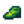

Railroad

The Railroad is an exterior region located north of the Mountain. It becomes accessible after an earthquake clears the blocked pass on the 3rd of Summer in the first year. As you wake up a message reads "There was an earthquake during the night."
Trains
On random days between 9am and 6pm, a train can pass through the area. If the player is outdoors, a message will pop up saying "A train is passing through Stardew Valley" accompanied by a train whistle sound. The train is only available for 1 in game hour or 1-2 real life minutes.
If the player triggers a Railroad cutscene (e.g., the wizard's Dark Talisman quest) while a train is passing, the train will be invisible (but audible) except for smoke clouds from the locomotive.
A player who stands in front of the train as it approaches or attacks the train with certain tools or weapons will suffer minor damage and be knocked back. The player can get stuck between the passing train and the platform, suffering damage repeatedly, losing all Health, and passing out.
Train Types
Each train typically consists of a locomotive and 8 to 24 cars, which can be open-topped resource cars, passenger cars, or sealed freight cars. Each time a train appears, there is a 10% chance for it to be a long train, in which case the number of cars is doubled, for a maximum length of 48 cars.[1]
There are five special types of train that can appear, determined at random when the train appears:
- A Joja Train, containing only dark gray freight cars emblazoned with the Joja logo. (9% chance)
- A Passenger Train, containing only passenger cars, that moves twice as fast as regular trains.(10% chance)
- A "Coal Train", containing approximately 70% resource cars, 30% freight cars, and no passenger cars. (8.1% chance)
- A Prison Train, containing only special blue cars with barred windows, that moves twice as fast as regular trains. (3.65% chance)
- A "Christmas Train", containing only red resource cars filled with presents. (13.85% chance during Winter)
Otherwise, a generic train will appear, containing approximately 16% resource cars, 20% freight cars, and 64% passenger cars.[1]
Resource Cars
When trains containing resource cars pass through the Railroad, they will sometimes spill their cargo onto the ground, dropping up to a maximum of between 4 and 9 items, dependent on the type of resource being transported.[2] Items will only drop if the farmer is present at the Railroad, and the train is in view.
- Coal cars drop
 Coal
Coal - Metal cars drop
 Copper Ore,
Copper Ore, Iron Ore, or
Iron Ore, or Gold Ore depending on the color of the car.
Gold Ore depending on the color of the car. - Wood cars drop
 Wood. Approximately 5% of drops are replaced with
Wood. Approximately 5% of drops are replaced with Hardwood
Hardwood - Rock cars drop
 Geode prior to Spring 10 of Year 2, or
Geode prior to Spring 10 of Year 2, or Magma Geode after. During Winter, they drop
Magma Geode after. During Winter, they drop Frozen Geode instead.
Frozen Geode instead. - Brick cars drop
 Stone
Stone - Present cars rarely drop
 Mystery Box (≈98.5% of drops will fail.)
Mystery Box (≈98.5% of drops will fail.)
Whenever a resource car attempts to drop an item, it also has a 1% chance of dropping 
Resource cars can also carry Compartments, Grass, Hay, or Packages. These do not drop regular items, but can still drop Leprechaun Shoes each time they would have dropped an item if they were carrying a different resource.
Areas
Train Platform
The Train Platform is located north of the tracks. There is an empty box that is used for the "The Mysterious Qi" Quest. Harvey's 10 Heart Event also takes place here.
The Spa
In the southwest of the Railroad is the Spa. Standing still when in the pool causes energy and health to be quickly restored. Penny’s 10 Heart Event takes place here.
There is a small pond against the outside of the spa. An Ornate Necklace can be caught there after reading Secret Note #25. A painting called 'Vista' can also be caught there. Neither of these items can be obtained during Winter as the water will be frozen.
Witch's Swamp
There's a passage to the Witch's Swamp through the cave northeast of the train platform. This cave will be unlocked by completing a series of quests given by the Wizard. A cutscene initiating the quests will start when the player first enters the Railroad area after completing either the Community Center bundles or Joja Community Development Form. After completing these quests players can use the cave to travel to the Witch's Swamp at anytime.
The Summit
The Summit can be accessed by a staircase in the northwest area of the railroad. Initially, the stairs are blocked by a boulder that the player can not move. The player can access the summit once Perfection is achieved.
Foraging
Forageable items found on the ground in the Railroad are:[3]
- In Spring:
 Daffodil (45%),
Daffodil (45%),  Dandelion (35%), and
Dandelion (35%), and  Leek (20%)
Leek (20%) - In Summer:
 Sweet Pea (47%),
Sweet Pea (47%),  Spice Berry (27%), and
Spice Berry (27%), and  Grape (27%)
Grape (27%) - In Fall:
 Wild Plum (37%),
Wild Plum (37%),  Blackberry (37%), and
Blackberry (37%), and  Hazelnut (25%)
Hazelnut (25%) - In Winter:
 Crystal Fruit (50%), and
Crystal Fruit (50%), and  Crocus (50%)
Crocus (50%)
There are only 31 locations where forageable items can spawn, and initially they are mostly covered by weeds, sticks, and rocks. Once the debris is cleared, items can spawn at an average rate of 0.1 per night.[4] The map shows the possible locations as red and magenta tiles; when the original trees are present, the magenta tiles have a 90% smaller chance of spawning items because they are identified as being behind the original trees.
Artifact Spots
The only Artifact that can be found by digging up Artifact Spots at the Railroad is:
 Prehistoric Tibia (4-8%[5])
Prehistoric Tibia (4-8%[5])
Other possible items are:
- 1-3
 Clay (19-37%[5])
Clay (19-37%[5])  Lost Book (20% + 6-12%[5]); once all Lost Books have been found, any potential Lost Book is replaced by
Lost Book (20% + 6-12%[5]); once all Lost Books have been found, any potential Lost Book is replaced by  Mixed Seeds.
Mixed Seeds.- Only in Winter:
 Winter Root (24%)
Winter Root (24%) - Only in Winter:
 Snow Yam (16%)
Snow Yam (16%) - 1-3 Stone (6-12%[5])
- 1-3 Copper Ore (5-11%[5])
- Only in Spring: 2-5
 Rice Shoot (5%)
Rice Shoot (5%) - An unseen
 Secret Note: up to 3% chance, only if the player has a Magnifying Glass.
Secret Note: up to 3% chance, only if the player has a Magnifying Glass.
Artifact spots spawn at an average rate of 0.25 per night, except in winter when the average rate increases to 0.4 per night.[6]
Gallery
Train
Present Train
Joja Train
Notes
- Standing in front of a train will cause damage to the player. Standing inside the right side of the train tunnel will cause the player to get stuck, and eventually pass out if their health is drained. Opening the in-game player menu until the train passes can prevent damage in this case.
- Pausing the game does not prevent the train from rolling.
Bugs
- As of version 1.6.15 all trains arrive at 9am.
External Links
Users with access to their saved game files may find the "Stardew Predictor" utility helpful for predicting when trains will appear. The utility is located at: https://mouseypounds.github.io/stardew-predictor/
References
- ↑ 1.0 1.1 See Train::Train in the game code.
- ↑ 2.0 2.1 See TrainCar::Draw in the game code.
- ↑ For each forage item, the provided percentage is the average percentage of all forage items that will be the specified item for that season. The input data is Locations.xnb, which is processed by code in GameLocation::spawnObjects.
- ↑ Of the 4340 total tiles at the Railroad, 39 (0.7%) are valid spawn locations for standard forage items. For more information on forage item spawning, see Foraging.
- ↑ 5.0 5.1 5.2 5.3 5.4 The chance of finding extra items in Artifact Spots in season-dependent. The maximum chance is in summer and fall. In winter, the chance is 50% less; in spring it is 6% less. See Artifact Spot for more information.
- ↑ Of the 4340 total tiles at the Railroad, 445 (10%) are valid spawn locations for artifact spots in spring, summer, and fall. 570 (13%) are valid spawn locations in winter. See Artifact Spot for more information.
History
- 1.0: Introduced.
- 1.1: Added cave passage to Witch's Swamp.
- 1.4: Trains now drop more items.
- 1.5: Added access to the Summit. 'Vista' can now be caught in the pond against the outside of the Spa when it's not Winter.
- 1.6: Christmas Trains can now drop Mystery Boxes. Resource cars carrying wood can now also drop Hardwood. Trains can appear on the first day after loading or reloading a saved game.
| Locations | |
|---|---|
| Locations | Backwoods • Beach • Bus Stop • Calico Desert • Cindersap Forest • Farm • Farm Cave • Farm Pond • Graveyard • Ginger Island • Mastery Cave • Minecart • Mines • Mountain • Mutant Bug Lair • Pelican Town • Quarry • Quarry Mine • Railroad • Secret Woods • Sewers • Skull Cavern • Summit • Tunnel • Volcano Dungeon • Witch's Swamp |